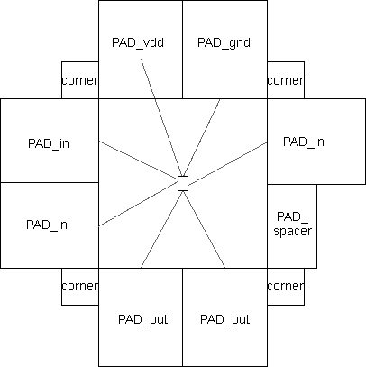
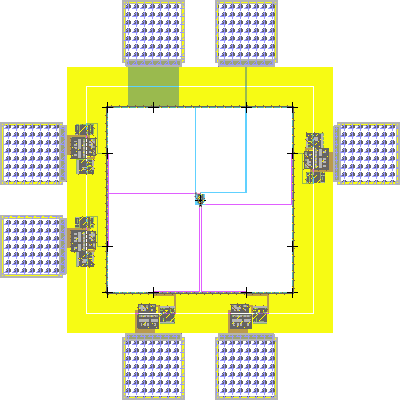

celllibrary LIBRARYFILE [copy] | ; Identifies the file with the pads |
cell PADFRAMECELL | ; Creates a cell to hold the pad frame |
views VIEWS | ; A list of views to generate |
core CORECELL | ; Places cell in center of pad frame |
align PADCELL INPUTPORT OUTPUTPORT | ; Defines input and output ports on pads |
export PADCELL IOPORT [COREPORT] | ; Defines exports on the pads |
place PADCELL [GAP] [PORTASSOCIATION] | ; Places a pad into the pad frame |
rotate DIRECTION | ; Turns the corner in pad placement |
The file must have exactly one celllibrary and cell statement,
as they identify the pad library and the pad frame cell.
If the celllibrary line ends with the keyword copy,
then cells from that library are copied into the library with the pad ring (by default, they are merely instantiated,
creating a cross-library reference to the pads library).
If there is a views statement, it identifies a list of views to generate
(such as sch or lay).
Requesting multiple views will produce multiple pad frame cells.
The file may have only one core statement to place your top-level circuit inside of the pad frame.
If there is no core statement,
then pads are placed without any circuit in the middle.
The align statement is used to identify connection points on the pads that will be used for placement.
Each pad should have an input and an output port that define the edges of the pad.
These ports are typically the on the power or ground rails that run through the pad.
When placing pads, the output port of one pad is aligned with the input port of the next pad.
Each pad that is placed with a place
statement is aligned with the previous pad according to the alignment factor.
A gap can be given in the placement that spreads the two pads by the specified distance.
For example, the statement:
place padIn gap=100
If a core cell has been given, you can also indicate wiring between the pads and the core ports.
This is done by having one or more port associations in the place statements.
The format of a port association is simply PADPORT = COREPORT.
For example, the statement:
place padOut tap=yThe port association can also create an export on the pad. The statement:
place padOut export io=o7 export tap=core_o7name keyword in conjunction
with exports defined for the pad at the start of the file. For example, defining the IO ports as
export padOut io tapplace padOut name=o7
The rotate statement rotates subsequent pads by the specified amount.
The statement has only two forms: rotate c to rotate clockwise,
and rotate cc to rotate counterclockwise.
Here is an example of a pad frame disk file, with the finished layout. There is a cell in the Samples library called "tool-PadFrame" (get it with the Sample Cells command, in menu Help / Load Built-in Libraries). The text below makes use of that cell, so save it to disk and read it with the Pad Frame Generator... command (in menu Tool / Generation).
; specify library with pads | ; place the top edge of pads |
celllibrary pads4u.txt | place PAD_corner{lay} |
place PAD_gnd{lay} gnd_in=gnd | |
; create cell "padframe" | place PAD_vdd{lay} m1m2=vdd |
cell padframe | |
; place the right edge of pads | |
; place this cell as the "core" | rotate c |
core tool-PadFrame | place PAD_corner{lay} |
place PAD_in{lay} out=pulse | |
; set the alignment of the pads | place PAD_spacer{lay} |
; (with input and output export) | |
align PAD_in{lay} dvddL dvddR | ; place the bottom edge of pads |
align PAD_out{lay} dvddL dvddR | rotate c |
align PAD_vdd{lay} dvddL dvddR | place PAD_corner{lay} |
align PAD_gnd{lay} dvddL dvddR | place PAD_out{lay} in=out1 |
align PAD_corner{lay} dvddL dvddR | place PAD_out{lay} in=out2 |
align PAD_spacer{lay} dvddL dvddR | |
; place the left edge of pads | |
rotate c | |
place PAD_corner{lay} | |
place PAD_in{lay} out=in1 | |
place PAD_in{lay} out=in2 |
|  | This file places 8 pads in a ring (2 on each side) and also places corner "pads" for making bends. The input pads connect to the 2 input ports "a1" and "a2". The output pads connect to the 3 output ports "out1", "out2", and "out3" The power and ground pads connect to the "vdd" and "gnd" ports. |
| Connections between pads and ports of the core cell use Unrouted arcs (from the Generic technology, see Section 7-6-3). After these connections are routed with real geometry, the finished layout is shown here, fully instantiated. |  |